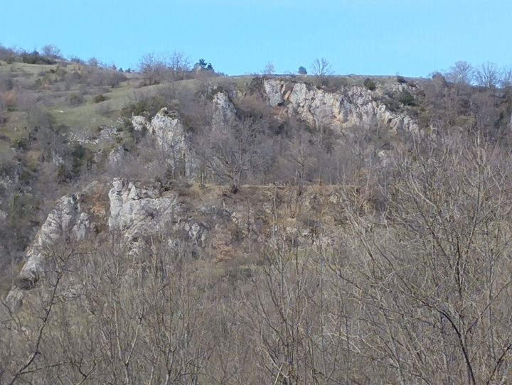
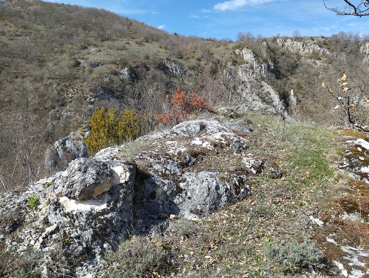

Le village de Niort de Sault a été le siège de l'importante seigneurie de la famille des Aniort jusqu'à la croisade contre les cathares.
Le château médiéval a été démembré suite à cette croisade.
Aussi les restes de ce château sont peu significatifs...
Reste des remparts du château médiéval
Vue de la plateforme qui accueillait le château médiéval

Vue depuis la plateforme sur le village de Niort (église et château des Fondi-de Niort)
grotte d'évacuation au milieu de la plateforme
Vue sur la plateforme
Autres vue depuis la plateforme ( la rivière Rébenty, l'aiguille )